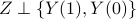

Blogs
some questions I am thinking of
BH procedure controls FDR for Two-sided multi-gaussian under any dependence structure.
But I think it's wrong.
e-BH procedure hardly beats BY procedure.
I wonder, if there's any connection between the multiple hypothesis testing framework and causal inference.
You see, in causal inference, we have  : binary treatment indicator, and the potential outcome Y(0), Y(1). In multiple hypothesis testing, we also have binary indicator: hypothesis
: binary treatment indicator, and the potential outcome Y(0), Y(1). In multiple hypothesis testing, we also have binary indicator: hypothesis  being null or non-null, and its corresponding outcome:
being null or non-null, and its corresponding outcome:  , let's say this is Y(0) then we also have Y(1), and we also rewrite
, let's say this is Y(0) then we also have Y(1), and we also rewrite  to denote the binary indicator.
to denote the binary indicator.
But the difference between the two is immense. In multiple hypothesis testing, , yet in causal inference, implies complete randomized experiment, which is unrealistic. Also, in multiple hypothesis testing, we care more about , i.e given Y, what is Z? whereas in causal inference, we usually have access to but we are intersted in
I am not sophisticated in thinking of good projects, so I usually think haphazardly.
Roadmap of multiple hypothesis testing
Testing millions of hypothesis simultaneously is commonly seen in various areas. To effectively report true discoveries, Yoav Benjamini and Yosef Hochberg proposed a new criteria FDR in 1995 along with BH procedure that controls FDR for independent and PRDS p-values. Ever since, Multiple hypothesis testing has been a prominent issue ever since.
martingale theory and estimation: Later on, John D. Storey, Jonathan E. Taylor, David Siegmund proposed a martingale view of BH procedure and also proposed the estimation problem. The martingale theory turns out to be a wonderful tool for constructing valid procedure under independency. Various procedures based on this theory includes , Seq, AdaPT
dependency problem: Scientists discovered the independent or PRDS assumption of BH procedure is too restricted and rarely appear in practice. Yoav Benjamini, Daniel Yekutieli proposed BY procedure, which guarantees FDR control for arbitrary dependent p-values, yet with a big sacrifice of power. Later on, Gilles Blanchard , Etienne Roquain generalizes this to step-up procedure. But still, these procedures are so conservative that greatly hinder their popularity for a long time. Until recently, Fithian and Lei made a big breakthrough by using conditional calibration technique. Other procedure like e-BH by Ruodu Wang, Aaditya Ramdas also works for dependent statistics. But contrary to Ruodu's conjecture, I think e-BH procedure can even hardly beat BY procedure (See my discussion below)
Covariate assisted procedure: In practice, when we do multiple hypothesis testing, we usually have more side information. Utilizing this can give us more power, for example some hypothesis may have group structure, and some hypothesis may be more “promising” than others based on other fields of research. So how do we model this kind of external information into testing procedure? One way of doing this is by using weights. False discovery control with p-value weighting firstly proposed the wBH procedure that allows any weights sum to a constant to have FDR control. Ever since, the discussion on what weights to choose has become a research line. Currently dominant weights is proposed by False discovery rate control with groups., the GBH procedure. But this kind of weights is not ideal, which is discussed in our paper, and we showed that the weights they proposed can sometimes worse than the unweighted BH procedure. Other weighted procedure like IHW, SABHA also fails to weight properly. In truth, weighing is difficult. This has previously been pointed out in a number of studies. Our optimal weights utilizing a two-group model has shown to outbeat these weights in various settings.
More importantly, despite weighted multiple hypothesis testing is a widely discussed research area, most literature cannot go without the assumption of independent p-values. And our paper made a breakthrough on this.
Bayesian framwork: There's a very beautiful view of BH procedure — the procedure stops when the Empirical Bayes Estimation of the Bayes FDR (or equivalently marginal FDR) is right below level alpha. Efron commented “It is always a good sign when a statistical procedure enjoys both a frequentist and Bayesian support, and the BH algorithm passes the test.”
Also, the bayesian two group model turns out to be a great working model for multiple hypothesis testing. Under the bayesian framework, where we assume every statistic comes from a mixture density model, it is believed that lfdr is a better statistics to work on rather than the p-value. Sun and Cai proposed the Clfdr procedure, but their procedure is hard to implement in practice, because the statistic lfdr relies on model estimation, whence their procedure doesn't have finite sample FDR control. Nevertheless, their procedure provides a good guideline, which was also utilized by AdaPT.
Replica methods
CGMT
Causal Inference
One thing that makes me unease when I learn causal inference is its non-testable assumptions, which turns out to be the indispensable element for causal inference.
Indeed, Rubin created a valid language to help us answer causal questions with rigorous math, which I personally believe is also the only way to tackle causal problems. I mean, can you do inference outside the framework Rubin built? Honestly saying, I can't imagine reliable inference without the concept of potential outcome.
However, I found this framework to be troublesome when evaluating the performance of models. Because establishing criteria of correctness is hard, let alone calculating it, guaranteeing it. Take the easy propensity score model as an example, people assumed this model will fit an machine learning algorithm to calculate propensity scores and then plug in the estimator of average treatment effect. But, how can you guarantee your model has good property? Does your algorithm guarantee some type I error? I believe statistics is not black box, not automatic. But rather, one shall always keep mathematical guarantee in mind instead of doing things intuitively.
To make a breakthrough in these problems seems difficult, because the model itself is based on some non testable assumptions. Nevertheless, I appreciate the greatness and beauty Rubin built in causal inference. At least one thing I learned is that causal is really uneasy.
Conformal Inference
Knockoff
A Power Analysis for knockoff
Power analysis in multiple hypothesis is hard, analysis for sophisticated statistics like LASSO is even more difficult. In fact, inference based on LASSO statistics is not well addressed until Barber and Candes(2015) made a breakthrough by proposing knockoff procedure.
But how well does it work? Power analysis for knockoff seems to rely on solely empirical results.
A powerful tool I learned in STAT 260 (Mean Field Asymptotics) provides an oracle picture of FDR-TPP trade-off under some specific settings (asymptotic, pi_0 known). With this tool in hand, we are able to compare the FDR and TPP in knockoff procedure and the “oracle procedure” to understand the performance of knockoff.
This is exactly what these papers are about.
A Power and Prediction Analysis for Knockoffs with Lasso Statistics
A Power Analysis for Knockoffs with the Lasso Coefficient-Difference Statistic
A note on e-values
Bayesian statistics
I'm obsessed with viewing things in geometry prospective. One of the most beautiful theorem I learned in bayesian statistics is
“Every admissible estimator is a (possibly randomized) Bayes estimator for some prior.”
Robust statistics, resilience
Check out my solutions to the challgenging problems for fun!